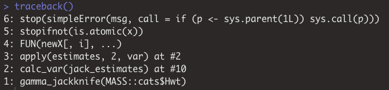
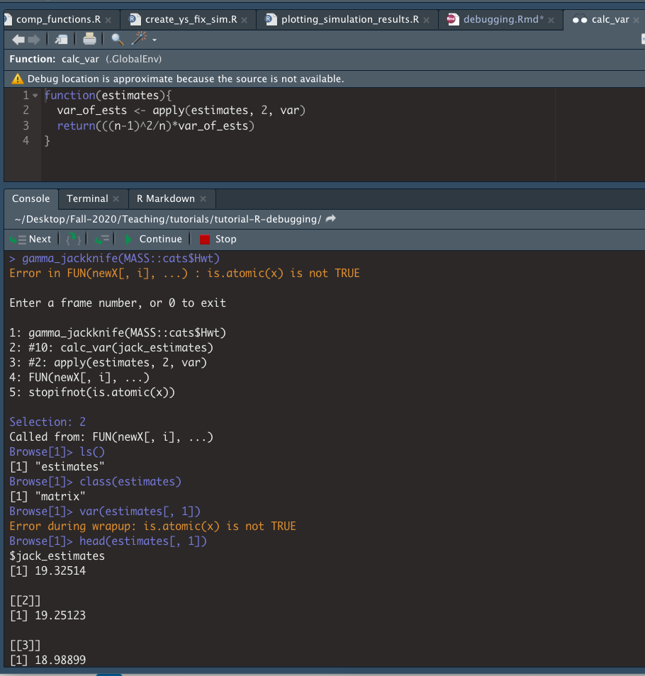
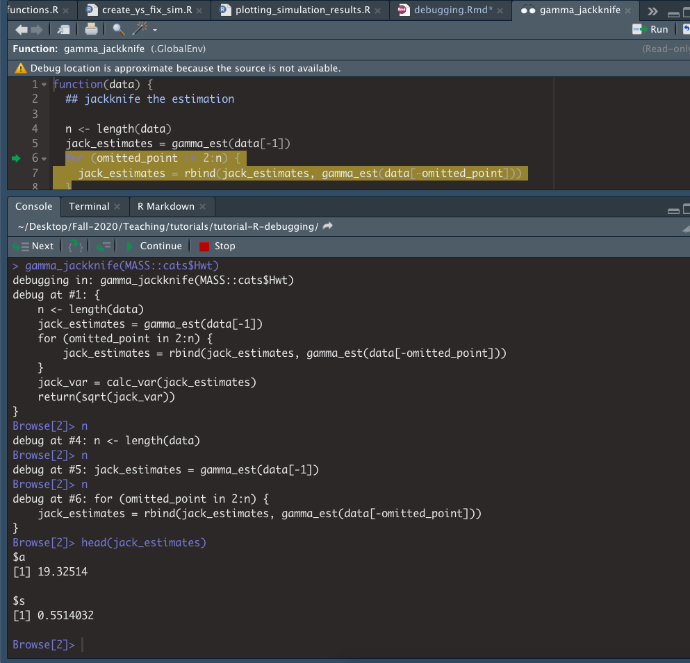

The goal for this section is to become familiar with the debugging tools available in R as well as provide additional information on online forums and common errors in R. Note that the debugging tools in R are difficult to illustrate in a Rmd document, so I recommend watching this screencast from the SCF tutorial. I will also do a live demo at the beginning of section if that you all would find that useful.
Also, note that the material in this PDF is a summary of SCF tutorial on debugging, so if you want to see more detail please visit the tutorial GitHub. The tutorial also has some good tips for defensive programming that you may find useful for preventing and catching errors in your code.
R’s debugging tools
Below is a list of the debugging tools available in R. I took screenshots illustrating how some of the tools work in RStudio in the example below.
Tools
Use traceback to view the call stack, which can help pinpoint where an error is occurring.
Use recover to navigate the stack of active function calls at the time of the error and browse within the desired call. If you set options(error = recover) then recover is invoked whenever an error occurs. You can revert the options to the default with options(error = NULL).
browser(): pauses current execution, provides an interactive interpreter. You can now step through a function line-by-line to find errors.
debug(someFunc): sets a browser() statement at the first line of someFunc
undebug(someFunc) removes the debug() statement. Or close the R session
debugonce(someFunc) lets you debug only once, no need to run undebug()
trace(): allows you to temporarily modify a function without saving the modifications
This is especially helpful for debugging functions in code where you don’t have the source handy (e.g., in the packages you’re using).
Edits will be removed when session ends, or when you call untrace() on the function
Example of debugging
We will use the jackKnife.R code to understand the debugging tools.
library(MASS)gamma_est <-function(data) {# this fits a gamma distribution to a collection of numbers m <-mean(data) v <-var(data) s <- v/m a <- m/sreturn(list(a=a,s=s))}calc_var <-function(estimates){ var_of_ests <-apply(estimates, 2, var)return(((n-1)^2/n)*var_of_ests)}gamma_jackknife <-function(data) {## jackknife the estimation n <-length(data) jack_estimates <-gamma_est(data[-1])for (omitted_point in2:n) { jack_estimates <-rbind(jack_estimates, gamma_est(data[-omitted_point])) } jack_var <-calc_var(jack_estimates)return(sqrt(jack_var))}# jackknife gamma dist. estimates of cat heart weightsgamma_jackknife(MASS::cats$Hwt)
Error in FUN(newX[, i], ...): is.atomic(x) is not TRUE
Notice that there is an error returned by the function, but it is unclear what is producing the error. We can start by calling traceback() to see what may have gone wrong.

traceback() shows us the set of calls leading up to the error. We see that the error is produced at 5, and thus came from the call at 4 FUN(newX[, i], ...) which occured after calling calc_var() function and attempting to excecute the apply statement.
An alternative to traceback() is recover(). If we have set options(error = recover) and call gamma_jackknife(MASS::cats$Hwt) again we will see the call stack (in reverse order of traceback), but now we have the option to select a number in the stack that we would like to enter. I selected 2 and entered the calc_var function. Typing ls() showed me that the only object in the function environment is estimates, which is a matrix. However, I see the is.atomic(x) error when I try to compute the variance of a column. When we look at the column, we can now see that we output a list, instead of a vector and we know exactly where the error is occuring. To exit we type Q and hit enter.

Now let’s say we want to browse in the gamma_jackknife() function to figure out why we are passing a list to calc_var we can utlize the debug() function, which will allow us to step through gamma_jackknife one line at a time. We first call debug(gamma_jackknife) and then when we attempt to run gamma_jackknife(MASS::cats$Hwt), because an error is produce, we will enter the browser mode.

We can use the graphical interface in RStudio or the command line, with the command n to step through lines of the code and see what it outputs. Here we see that gamma_est is returning a list and that is likely the source of our issues.
For more details on these functions, as well as how to use trace to temporarialy add edits see the SCF tutorial and the screencast. Also, as I stated above if there is enough interest I can do a live demo at the beginning of section.
Common errors
Parenthesis mis-matches
[[...]] vs. [...]
# example listmyList <-list("A"=1:10,"B"=11:20)# one setcat("Type: ", typeof(myList[1]), "\nLength: ", length(myList[1]), sep ="")
Type: list
Length: 1
# two setscat("Type: ", typeof(myList[[1]]), "\nLength: ", length(myList[[1]]), sep ="")
Type: integer
Length: 10
== vs. =
Comparing real numbers exactly using == is dangerous because numbers on a computer are only represented to limited numerical precision.
# exact comparison1/3==4*(4/12-3/12)
[1] FALSE
# approximate comparison# default tolerance is sqrt(.Machine$double.eps)all.equal(target =1/3, current =4*(4/12-3/12))
[1] TRUE
You expect a single value but execution of the code gives a vector
You want to compare an entire vector but your code just compares the first value (e.g., in an if statement)
use identical()
x <-1:10y <-1:5if (x == y) {print("Equal")} else {print("Not equal")}
Error in if (x == y) {: the condition has length > 1
if (identical(x, y)) {print("Equal")} else {print("Not equal")}
[1] "Not equal"
Silent type conversion when you don’t want it, or lack of coercion where you’re expecting it
eg., read.csv() and the stringsAsFactors argument
Using the wrong function or variable name
Giving unnamed arguments to a function in the wrong order
In an if-else statement, the else cannot be on its own line (unless all the code is enclosed in {}) because R will see the if part of the statement, which is a valid R statement, will execute that, and then will encounter the else and return an error.
Forgetting to define a variable in the environment of a function and having R, via lexical scoping, get that variable as a global variable from one of the enclosing environments. At best the types are not compatible and you get an error; at worst, you use a garbage value and the bug is hard to trace. In some cases your code may work fine when you develop the code (if the variable exists in the enclosing environment), but then may not work when you restart R if the variable no longer exists or is different.
Clear your environment before testing (rm(list=ls());gc())
Restart R session and test
R (usually helpfully) drops matrix and array dimensions that are extraneous. This can sometimes confuse later code that expects an object of a certain dimension.
Of course these are also helpful for figuring out how to do things, not just for fixing bugs. For example, this blogpost has a guide to R based simply on Stack Overflow posts.
Asking questions online
If you’ve searched the archive and haven’t found an answer to your problem, you can often get help by posting to the R-help mailing list or one of the other lists mentioned above. A few guidelines (generally relevant when posting to mailing lists beyond just the R lists):
Search the archives and look through relevant R books or manuals first.
The R mailing lists are a way to get free advice from the experts, who include some of the world’s most knowledgeable R experts - seriously - members of the R core development team contribute frequently. The cost is that you should do your homework and that sometimes the responses you get may be blunt, along the lines of “read the manual”. Chris considers it a pretty good tradeoff - where else do you get the foremost experts in a domain actually helping you?
Pair debugging exercise
For the group work this week we will step through debugging the logitBoot() function. This is a function that computes a bootstrapped estimate of the standard error of the coefficient on a logistic regression model. From R’s implementation of logistic regression, stored in the mod variable below, we can see that the estimated standard error is around 3.
my_data <-read.csv('./data.csv')# fit model in Rmod <-glm(y ~ x, data = my_data, family ='binomial')# note that the standard error for the regression coefficient is ~3summary(mod)
Call:
glm(formula = y ~ x, family = "binomial", data = my_data)
Deviance Residuals:
Min 1Q Median 3Q Max
-0.6045 -0.2976 -0.1867 -0.1332 2.4429
Coefficients:
Estimate Std. Error z value Pr(>|z|)
(Intercept) -1.553 1.181 -1.315 0.188
x -4.052 3.231 -1.254 0.210
(Dispersion parameter for binomial family taken to be 1)
Null deviance: 16.794 on 49 degrees of freedom
Residual deviance: 14.823 on 48 degrees of freedom
AIC: 18.823
Number of Fisher Scoring iterations: 7
Buggy logitBoot() function
Take a quick look at the source code and output below:
my_data <-read.csv('./data.csv')logitBoot <-function(y, x, n_boot =2000) {set.seed(5)# do n_boot random permutations of x and y and return coefficient on x with# the myGLM function boot_coefs <-sapply(seq_len(n_boot), myGLM, y, x)# compute standard deviation of those estimates and return boot_se <-sd(boot_coefs)return(boot_se)}myGLM <-function(i, y, x) { n <-length(y)# randomly sample with replacement from the observations in the data boot_sample <-sample(seq_len(n), n, replace =TRUE)# create vectors of the bootstrapped samples x_boot <- x[boot_sample] y_boot <- y[boot_sample]# fit logistic regression on permutated data mod_boot <-glm(y_boot ~ x_boot, family ='binomial')# return the estimated coefficientreturn(mod_boot$coef[2])}# estimate standard error with our bootstrap function# note the overestimation of standard error 119 > 3logitBoot(my_data$y, my_data$x)
Warning: glm.fit: algorithm did not converge
Warning: glm.fit: fitted probabilities numerically 0 or 1 occurred
[1] 119.099
When calling logitBoot(my_data$y, my_data$x), which is supposed to give the same standard error of around 3, we return a value of over 100.
Debugging steps
The goal here is to figure out what is going wrong and, if time, fix the issue. Below are a list of steps you can take reach this goal. Note, that the functions are in the logitBoot.R script, so it will easiest to open that file and work from there.
Load data.csv and look at the data to see what we are working with. There should be a column of y values (which are 0 or 1) and a column of x values (which are continuous).
The goal of logistic regression is to model which class y (0 or 1) an observation falls in based on x.
Load the functions in the logitBoot.R script
If you’re using RStudio, be sure to set the working directory to the labs/04/ directory. You can do this Using Session > Set Working Directory > To Source File Location from the top menu. Then you can use the Source button at the top of the RStudio source file editor to source in the whole file at one time.
Try to run the logitBoot(my_data$y, my_data$x). Notice the overestimate and the warning. We want to figure out what is going wrong.
Use one of the methods we discussed about to debug logitBoot:
add breakpoints
use debug()/debugonce()
manually add a call to browser()
use trace() to temporarily add a call to browser()
Now rerun logitBoot(my_data$y, my_data$x).
Run through each line until you compute the vector boot_coefs. Use the range(), quantile(), mean(), median(), etc. functions to examine statistics from boot_coefs and try to find any strange values.
Find the index of sample that is causing the issue.
Now that we have identified where the issue is occuring we still need to figure out why that particular permutation is problematic.
Edit the function to return a list of coefficient, y_boot, and x_boot.
Change sapply to lapply.
Rerun logitBoot(my_data$y, my_data$x), which will start debugging where you set the debug point. Step through the code lines and look at boot_coefs[[i]] where i is the index found in step 5.
Look at the values of x_boot that correspond to y_boot = 1. Also, sort the x_boot output. Can you tell what is going wrong?
Now that we know what is causing the warning we can remove the changes that you made, so that logitBoot() outputs a vector again, instead of a list. Alternatively, for extra practice with nested list structures, you can modify logitBoot() further to work with the new boot_coefs data structure.
After identifying the issue, we could edit the myGLM() function to not compute the model when that particular issue arises. Or we could instead employ a more holistic approach with tryCatch(). With this we can handle unforseen issues that may arise. (This is what is implemented in the logitBoot_solution.R script, which I will push after section.) Note, with the fixed code we now seem to underestimating the standard error. I am not sure why that is happening… because as far as I can tell the code is working correctly.